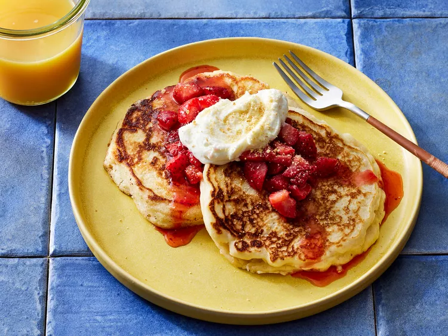

PANCAKE

Discription
Cheesecake pancakes topped with strawberries definitely take your
breakfast game up a few notches.
Ingredients
- 8 ounces fresh strawberries, hulled and chopped
- 3/4 cup strawberry jam
- 4 ounces cream cheese, softened
- 5 tablespoons white sugar, divided
- 2 teaspoons milk
- 1/4 teaspoon vanilla extract
- 1 3/4 cups all purpose flour
- 2 teaspoons baking powder
- 1/2 teaspoon baking soda
- 1/4 teaspoon salt
- 1 large egg, lightly beaten
- 1 1/2 cups buttermilk
- 3 tablespoons vegetable oil
- cooking spray
- Graham cracker crumbs or powdered sugar for topping
Steps
- Make the strawberry topping.
- Make the cream cheese swirl.
- Make the pancake batter.
- Pour portions of the batter onto the prepared skillet and cook until the edges are golden brown and the batter is bubbling on top.
- Pipe a swirl of the cream cheese mixture onto each pancake. Coat with cooking spray.
- Flip and cook until golden brown on both sides.
- Serve with strawberry topping and sprinkle with graham cracker crumbs.